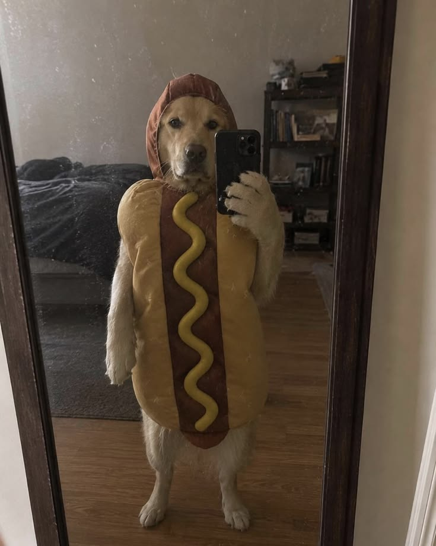

About Me
A little about who I am and where I'm headed.

Introduction
I'm JOHN KENETH MANJARES, a BSIT student. A student with a growing passion for technology, creativity, and learning new things. I’m interested in computers and information technology, and I enjoy discovering how technology can be used to solve problems and create useful digital experiences. As I continue my studies, I’m working on developing my skills in different areas of IT, while also exploring new tools and ideas. I believe that every project is an opportunity to learn, improve, and become better at what I do. This website is a collection of my interests, projects, skills, and experiences. Feel free to explore and get to know more about me and the things I enjoy creating. Thank you for visiting my website!
Education
-
Bachelor of Science in Information Technology
STI / BCP - Bestlink College of the Philippines • 1st Year / 2nd Year, 3rd Year • 2024 - 2025 / 2025 - 2026
-
Senior High School
Bula Senior High School • ICT - Computer System and Services • 2019 - 2021
-
Junior High / Elementary
Magogon Elementary School / Anislag National High School • 2009 - 2015 / 2015 - 2019